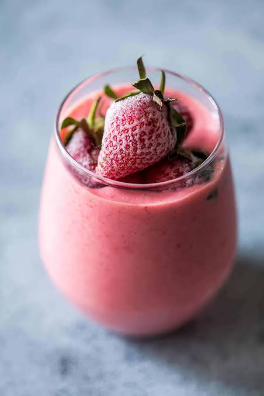
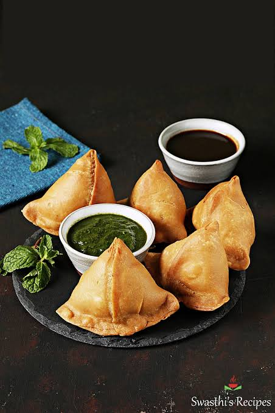
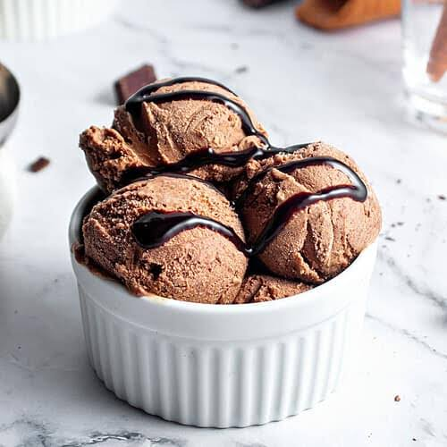
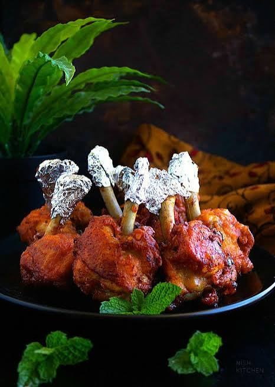
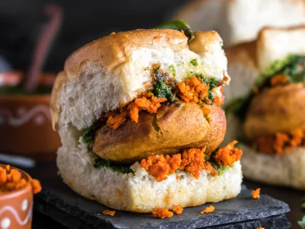
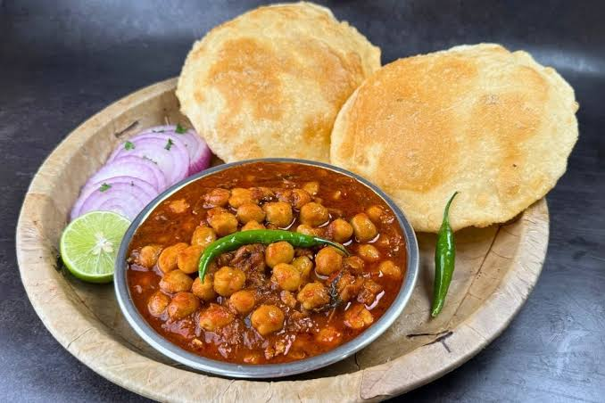

Strawberry smoothie
Served chilled, smoothies are a great way to stay hydrated while enjoying a burst of flavor.

Samosa
The filling is seasoned with aromatic spices like cumin, coriander, garam masala, and turmeric, giving it a rich and savory taste.

Chocolate Ice-Cream
Perfect for hot summer days, celebrations, or simply indulging in a sweet treat, ice cream brings joy with every scoop!

Chicken Lollipop
This popular dish is deep-fried to perfection and coated with a spicy, tangy marinade made from ginger, garlic, soy sauce, and chili paste.

Vada pav
This affordable, flavorful, and satisfying snack is a favorite among food lovers and a must-try for anyone craving a taste of authentic Indian street food!

Chola Bhatura
The chole is slow-cooked with aromatic spices, tomatoes, onions, and herbs, giving it a bold and flavorful taste. The bhature, made from fermented dough, is fried until golden brown, making it crispy on the outside and soft on the inside.